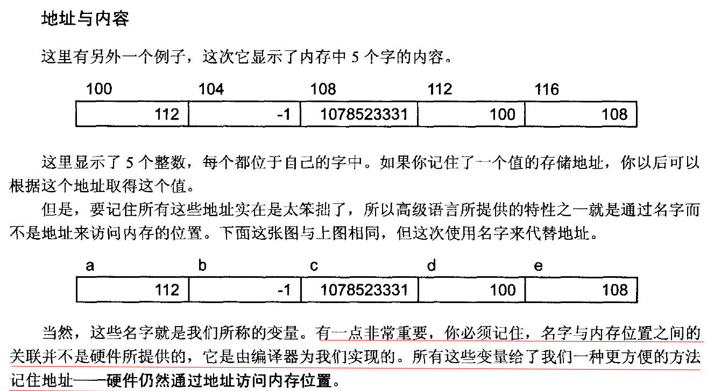
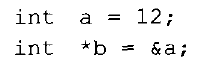
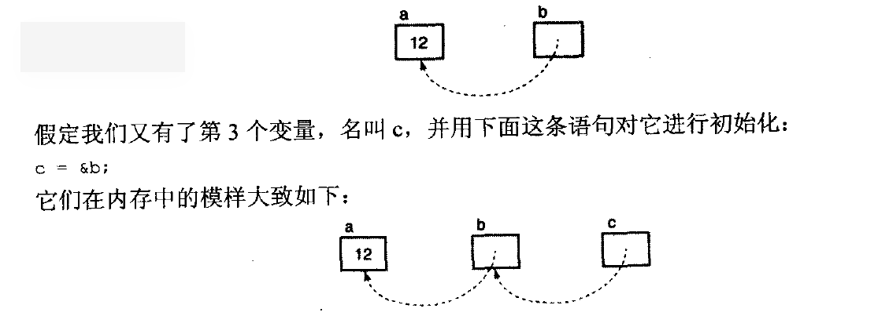
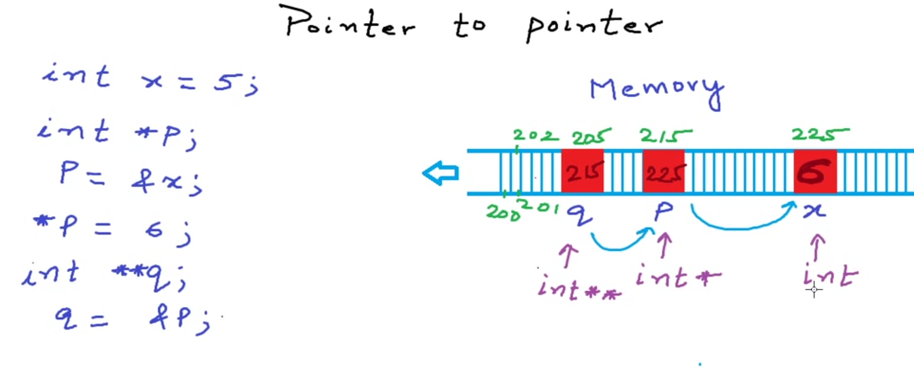

C and pointer reading notes
关于《C和指针》这本书的读书记录。
《C和指针》
1th 快速上手
数组名
1
int arr[4];
假设
int型变量占4 Byte，那么这个声明，编译器会给c预留内存空间4×4 Byte，并且
数组名代表着指向数组第一个元素的指针。字符串常量存储在常量区，常量区存储的内容是不能被修改的。
指针指定一个存储与计算机内存中的值的地址。
每个 C 程序必须有一个 main 函数，因为它是程序执行的起点。
在 C 语言中，数组参数是以
引用(reference)形式进行传递的，即传址调用，
而标量和常量是按值(value)传递的。
在函数中对标量参数的任何修改都会在函数返回时丢失，因此，被调用函数无法修改
调用函数以传值形式传递给它的参数。
然而，当被调用函数修改数组参数的其中一个元素时，调用函数所传递的数组就会被实际地修改。在 C语言中，字符串是一串以
NUL字节结尾的字符。NUL是作为字符串终止符，它本身并不被看作是字符串的一部分。字符串常量就是源程序中被双引号括起来的一串字符。 例如,"Hello"在内存中占据6个字节的空间。由于scanf函数的实现原理，所有标量参数的前面必须加上一个
&符号。数组参数前面不需要加上&符号，但是若数组参数中出现下标引用，即实际参数是数组某个特定元素，那么它的前面也必须加上&编程提示
- 在while和if表达式中蕴含赋值操作
- 始终要进行检查，确保数组不越界
3th 数据
在C语言中，仅有4中基本数据类型 –
整型、浮点型、指针和聚合类型（如数组和结构等).指针可以有效地实现如tree和list这类高级数据结构。
房子和它的门牌号码标识
可以把计算机内存想象成一条长街上的一间间房子，每间房子都用一个唯一的号码进行标识。每个位置包含一个值，这和它的地址是独立且显著不同的，即使它们都是数字.
程序在使用字符串常量会生成一个“指向字符的常量指针”。当一个字符串常量出现于一个表达式中时，表达式所使用的值就是这些字符所存储的地址，而不是这些字符本身。
不能把字符串常量赋值给一个字符数组，因为字符串常量的直接值是一个指针，而不是这些字符本身。
typedef允许你为各种数据类型定义新名字。
typedef int another_name使用typedef声明类型可以减少使声明变得又臭又长的危险，尤其是那些复杂的声明。
4th 语句
空语句
C最简单的语句就是空语句，它本身只包含一个分号。空语句本身并不执行任何任务，但有时还是有用。
适用场景: 语法要求出现一条完整的语句。括号是if语句的一部分。
C并不具备布尔类型，零值表示假，非零值表示真。
1 | if (x > 3) |
上边这条语句中，表达式x > 3的值将是0或1.
5th 操作符和表达式
- AND、OR、XOR要求操作数为整数类型，它们对操作数对应的位进行指定操作，每次对左右操作数的各一位进行操作。
- 下标引用操作和间接访问表达式是等价的。
array[下标] <=> *(array + (下标))
6th 指针

Pointers - variables that store address of another variable.
指针变量存储的是地址
- 间接访问(de-referencing)操作符
- 变量给了我们更方便的方法记住地址，但是硬件仍然通过地址访问内存位置。
- 变量的值就是分配给该变量的内存位置所存储的数值。??
- 指针变量可以作为左值，并不是因为它们是指针，而是因为它们是变量。对指针变量进行间接访问表示我们应该访问指针所指向的位置。


int *b = &a和b = &a的区别是什么?
这两个表达的应该是一样的意思。
看第二个b，这个b代表的是指针，如果加上声明语句的话和前一个是一样的
感觉int * p; p = &a;,这个更好理解。
一个例子
1 |
|
a pointer to pointer(pic source: youtube mycodeschool)
1
2
3int *p;
int **q;
q = &p;
